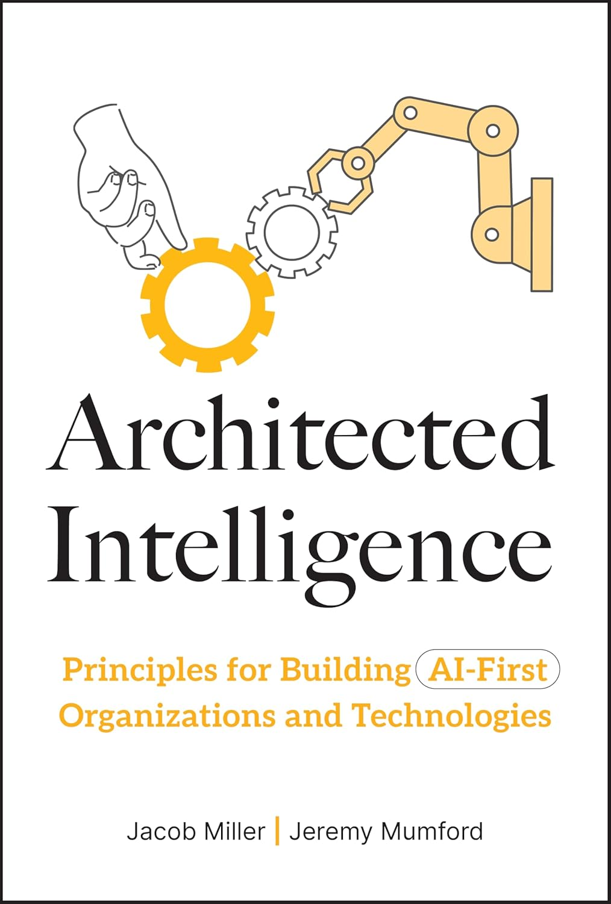

Unified systems
Recalibrate from separate “AI” and “human” systems toward user-agnostic systems. Start with the end in mind and apply AI where the impact is greatest.
Design and build AI systems and teams with a holistic blueprint for strategy at org scale and specifications for real technology.
Whether you are steering an AI-first transformation or engineering a single workflow, the Architected Intelligence framework ties strategy to implementation: output, input, model, observability, and enablement.

Educational center
The book walks leaders and builders through a complete model, versatile enough for culture change, concrete enough for architecture decisions. Each section below summarizes the core ideas of one component (the book expands with case studies, principles, and tactics).
Chapter digests: short maps of core ideas and stated principles for each published chapter (lightweight companion to the book). For the full treatment, see Architected Intelligence on Amazon.
Recalibrate from separate “AI” and “human” systems toward user-agnostic systems. Start with the end in mind and apply AI where the impact is greatest.
Strong models still need distinctive input. The Knowledge Transformation Cycle connects platforms and people as information is refined over time.
Disaggregate abstract “trust” into TACA: Transparency, Accuracy, Calibration, and Alignment, then evaluate throughout the system, not only at the final output.
Component 1
Begin with the end in mind: unified systems, prioritized opportunities, and battle-tested agents and workflows.
Output is where strategy meets intent. The book argues for designing integrated systems rather than bolting AI onto human processes, and for interrogating why AI belongs in the work: strengthen your real edge, not generic automation.
From there you gather a wide set of AI opportunities and prioritize them by strategic relevance, quality versus impact, frequency versus value, and feasibility, so initiatives do not collapse at the ninety-eighth percentile.
The section closes with agentic workflows through the four I’s: Initiate, Inspect, Improve, Implement, plus architecture tradeoffs such as imperative versus declarative design, tools, human handoffs, goals, and sub-agents.
Chapter digests
Component 2
Models need fuel. Without the right data, systems under-deliver, or become undifferentiated commodities.
The Knowledge Transformation Cycle describes how platforms and people continuously improve information from raw signal toward something models can use reliably.
The input arc spans discovering and acquiring data, mastering the “last mile” of retrieval and delivery (including RAG, hybrid and multi-stage search), and treating humans as high-value nodes in a network, so AI can request expertise or escalate ambiguity through patterns like copilots and transactional flows.
A “knowledge pyramid” helps organizations curate information until it is canon: accurate enough to confidently ground AI behavior.
Chapter digests
Component 3
The engine is only as good as how context is engineered, selected, and operated in production.
Context engineering weaves structured and unstructured signals into prompts and workflows. The book recommends a ladder of interventions (context, caching, memory) before defaulting to fine-tuning and its operational cost.
On selection and optimization, teams navigate the classic triangle: cost, latency, and intelligence. Provider landscapes (labs, specialized inference, hyperscalers, routers) and techniques like compression, routing, and multi-model orchestration help squeeze responsible performance from the stack.
Chapter digests
Component 4
Bridge software reliability and model evaluation: know what is happening in production and why it behaves that way.
Generative AI sits at the intersection of engineering and data science. Observability chapters use familiar production tooling, structured around an AWS-style maturity model, while adapting metrics to non-deterministic systems.
For the “why,” the book introduces TACA and shows how to build evaluation datasets and apply them across the lifecycle, not only on final answers.
Chapter digests
Component 5
Sustainable AI-first work requires the right people patterns and platform principles, not heroics.
People chapters focus on leadership, AI-ready talent, internal champions, and a critique of pure centralization versus pure decentralization, landing on a hub-and-spoke balance for expertise and scale.
Platform chapters codify traits like modularity, scalability, results-orientation, broad access, and progressive quality, then map coordination, support, and action platforms into a coherent stack.
Chapter digests
Use this site as a lightweight map. The book develops each component with cases, operating principles, and implementation detail for leaders and builders.